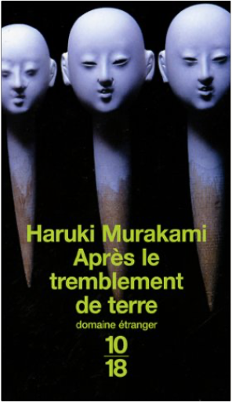

après le tremblement de terreharuki murakami Atypique, Haruki Murakami l'est à bien des égards. Né à Kobé en 1949, ce lettré qui a étudié la tragédie grecque se prend de passion pour les États-Unis. Il ouvre un club de jazz à Tokyo. Ce n'est pas assez. Il part en Amérique et devient le traducteur de Fitzgerald et Carver en langue japonaise. Il écrit aussi. Déjà cinq romans, parmi lesquels L'éléphant s'évapore, paru au Seuil.
Après le tremblement de terre est un recueil de nouvelles inédites, écrites en 1995, sous le choc du tremblement de terre de Kobé. Murakami pose dans chacune de ces six nouvelles un rapport avec l'événement tragique. Mais l'écrivain en dégage un autre sens. Pour la femme de Kamura, le tremblement vu à la télévision lui fait comprendre que son mari ne lui apporte plus rien. Elle le quitte, sans dire un mot. L'évocation du tremblement peut à l'inverse faire surgir chez d'autres personnages le sentiment amoureux ou encore, plus curieusement, le fantastique, comme dans cette nouvelle où une grenouille géante vient avertir un petit employé médiocre de l'imminence de l'événement. L'écriture de Murakami est étonnante, combinant le vide et le plein. On sent que l'auteur s'efforce à l'épure, mais que la puissance émotionnelle est là, extrêmement vive, à l'image de ces deux personnages qui décident un soir, devant un feu de camp, de mourir ensemble et finalement s'endorment. Une leçon de vie et de style. —Denis Gombert  autoportrait de l'auteur en coureur de fondharuki murakami autoportrait de l'auteur en coureur de fondharuki murakami Journal, essai autobiographique, éloge de la course à pied, au fil de confidences inédites, Haruki Murakami se dévoile et nous livre une méditation lumineuse sur ce bipède en quête de vérité qu’est l’homme…
Depuis plus de vingt-cinq ans, Murakami court. Dix kilomètres par jour, six jours par semaine, un marathon par an. Une passion indissociable de son métier d’écrivain, qui nourrit la ténacité nécessaire à remplir ses pages blanches.
Le 1er avril 1978, en plein match de base-ball, Murakami décide d’écrire un roman. Loin du mythe de l’artiste bohème, il s’impose alors une discipline spartiate. Finie la vie de noctambule dans son club de jazz et les soixante cigarettes quotidiennes, l’homme se lève tôt, se couche tôt et consacre ses journées àécrire, immobile. Le besoin d’exercice devient aussi vital que celui d’écrire. C’est le début d’une autre vocation, à trente-trois ans…
Son premier marathon, il l’a couru seul, dans la chaleur suffocante d’un été grec. Mais courir va surtout lui permettre de briser la solitude de l’écrivain, à travers d’ultimes odyssées collectives, dans la douceur printanière de Boston ou les couleurs automnales de New York.
Quand il ne tape pas sur son clavier, Murakami bat le pavé, et c’est ce qu’il voudrait qu’on retienne de lui, une fois la dernière ligne d’arrivée franchie : Haruki Murakami, 1949-20**, Écrivain (et coureur), Au moins il n’a jamais marché... |


 Made with Delicious Library
Made with Delicious Library